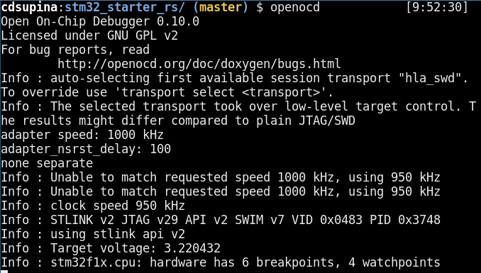
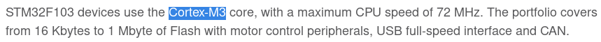
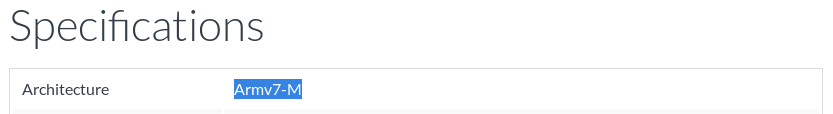

Introduction
Overview
The goal of this book is to be a good starting point for people new to embedded Rust programming. If you are new to Rust and/or new to embedded programming, you should be able gain knowledge from this book.
This book is separated into two main parts:
- Embedded Rust Programming
- Open Rustbot
Both parts of this book can be a starting point. However, they offer different learning experiences that may suit different people. The "Embedded Rust Programming" part goes over one concept at a time with increasing difficulty and the "Open Rustbot" part walks through building and programming a rover using Rust. Below is a list of required hardware for each section.
Hardware Required for both Parts
| Name | Image | Price | Link |
|---|---|---|---|
| STM32F103C8T6 Development Board | image | $6.33 | https://amzn.to/32bTqeM |
| ST-Link V2 | image | $8.60 | https://amzn.to/35wE9qM |
Embedded Rust Programming
| Name | Image | Price | Link |
|---|
Open Rustbot
| Name | Image | Price | Link |
|---|
After you have an ST-Link V2 and an STM32f103 development board you should proceed to complete the steps in the Getting Started section.
Getting Started
Required Hardware
| Name | Image | Price | Link |
|---|---|---|---|
| STM32F103C8T6 Development Board | image | $6.33 | https://amzn.to/32bTqeM |
| ST-Link V2 | image | $8.60 | https://amzn.to/35wE9qM |
Install
- Install rust https://www.rust-lang.org/tools/install
- Add the the thumbv7m 1 target
rustup target add thumbv7m-none-eabi - Install cargo-generate and cargo-binutils
cargo install cargo-generate cargo-binutils - Install llvm-tools-preview component
rustup component add llvm-tools-preview - Install openocd and gdb-multiarch using your OS's package manager
stm32_starter_rs
To ease the process of starting a new embedded project using Rust. We have created a starter repository called stm32_starter_rs. You can clone this repository using the following command.
git clone https://github.com/Open-Rustbot/stm32_starter_rs.git
This repository is setup for the STM32f103 microcontroller, but it can easily be configured for other STM32 microcontrollers. Now we will proceed to go through each of the files in the directory and their explain purpose.
./cargo/config
memory.x
openocd.cfg
openocd.gdb
Hello World
After installing the required software we can perform the "Hello World" of the hardware world, a blinking LED. Take a look at src/main.rs and make an effort to understand the script.
Connect the STM32 Microcontroller to Computer
Launch OpenOCD
After your microcontroller is connected to your computer using the ST-Link, open a terminal, navigate to the root of the
repository, and execute openocd. You should see an output similar to the screenshot below.

It is important to be in the same directory of the repository so that openocd can read the openocd.cfg file located in the directory.
Run the Program
In another terminal, navigate to the same directory again and this time execute cargo run.
This will compile the rust source code, flash it onto the microcontroller, and open a gdb prompt. Enter a c in the gdb
prompt to continue the program. You should now see the led on the microcontroller periodically blinking.
This program is now flashed onto the microcontroller, so pressing the reset button will restart the program.
Congratulations! You have successfully run your first embedded rust program!
1. This is STM32f103 specific. If you are using a different STM32 microcontroller check this section of the appendix for information on how to find the correct target for your microcontroller.
Embedded Rust Programming
hello
Open Rust Bot
Glossary
Rust
OpenOCD
An open-source "on-chip debugger" used for flashing and debugging programs on microcontrollers.
GDB
Appendix
Alternative STM32 Microcontrollers
Finding the Correct Target for Your Microcontroller
This is STM32f103 specific. If you are using a different microcontroller check the relevant pages on ARM's website.
For example if I needed to find the target for the STM32f103 microcontroller which is the board this book uses. I can go to the the STM32f103's page here.

In the overview I can see that the microcontroller has a Cortex-M3 core. I then go to the Cortex-M3 page. The first thing in the list of specifications is the architecture which is listed as ARMv7-M.

This means that the target required for the microcontroller is thumbv7m and I can use the command
rustup target add thumbv7m-none-eabi to add it. Replace "thumbv7m" with your boards instruction set.